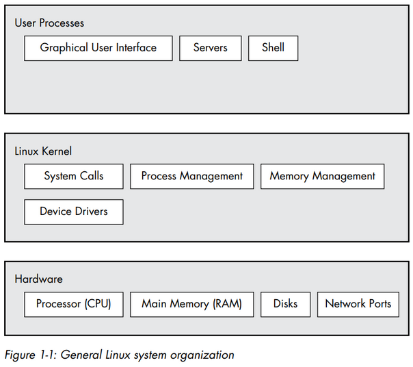

How Linux Works
Table of Contents
1 Chapter 1: The Big Picture
The most effective way to understand how an operating system works is through abstraction - a fancy way of saying that you can ignore most of the details. There are many terms for an abstracted subdivision in computer software, including subsystem, module, package, and component.
1.1 Levels and Layers of Abstraction in a Linux System
A Linux system has three main levels:

The kernel is a software residing in memory. The kernel manages the hardware and acts primarily as an interface between the hardware and any running program. The kernel runs in kernel mode, where code has unrestricted access to the processor and main memory, which allows a kernel process to easily crash the entire system. The area that only the kernel can access is called kernel space.
User processes run in user mode, which restricts access to a subset of memory and safe CPU operations. User space refers to the parts of main memory that the user processes can access. If a user process crashes, the consequences are limited and can be cleaned up by the kernel.
1.2 Hardware: Understanding Main Memory
A state is a particular arrangement of bits, but it's common to refer to the state in abstract terms rather than to the actual bits, for example, "the process is performing Stage 2 of its startup". The term image refers to a particular physical arrangement of bits.
1.3 The Kernel
Kernel manages:
- Processes
- Memory
- Device drivers
- System calls and support
1.3.1 Process Management
Kernel is responsible for determining which processes are allowed to use the CPU. The system appears to be running multiple processes at the same time (a capability known as multitasking), but only one process may actually use the CPU at any given time.
Each piece of time is called a time slice. The act of one process giving up control of the CPU to another process is called a context switch. The kernel is responsible for context switching. Context switch answers the important question of when the kernel runs: it runs between process time slices during a context switch.
For example, a situation in which a process is running in user mode but its time slice is up:
- CPU interrupts the current process based on an internal timer, switches into kernel mode, and hands control back to kernel.
- Kernel records the current state of CPU and memory, which will be essential to resuming the process.
- Kernel performs any tasks that might have come up during the preceding time slice, such as collecting data from input and output, or I/O, operations.
- Kernel analyzes the list of processes that are ready to run and chooses one.
- Kernel prepares the memory and CPU for this new process.
- Kernel tells CPU how long the time slice for the new process will last.
- Kernel switches CPU into user mode and hands control of CPU to the process.
1.3.2 Memory Management
Kernel splits memory into subdivisions and maintains state information of the subdivisions. It keeps track of what is currently allocated to a particular process, what might be shared between processes, and what is free:
- Each user process needs its own section of memory.
- One user process may not access the private memory of another process.
- User processes can share memory.
- Some memory in user processes can be read-only.
- Kernel must have its own private area in memory that user processes can't access.
- The system can use more memory than is physically present by using disk space as auxiliary.
Modern CPUs include a memory management unit (MMU) that enables a memory access scheme called virtual memory. A process does not directly access the memory by its physical location in the hardware. Instead, the kernel sets up each process to act as if it had an entire machine to itself. When the process accesses some of its memory, the MMU intercepts the access and uses a memory address map to translate the memory location from the process into an actual physical memory location on the machine. The implementation of a memory address map is called a page table.
1.3.3 Device Drivers
Kernel acts as an interface between hardware and processes.It's usually the kernel's job to operate the hardware. A device is typically accessible only in kernel mode because improper access could crash the machine.
Different devices rarely have the same programming interface, even if the devices do the same thing. Therefore, device drivers have traditionally been part of the kernel, and they strive to present a uniform interface to user processes in order to simplify the software developer's job.
1.3.4 System Calls and Support
Processes normally use system calls to communicate with the kernel. System calls perform specifc tasks that a user process alone cannot do, for example, the acts of opening, reading, and writing files.
2 system calls, fork() and exec(), are important to understanding how processes start up:
fork(): Kernel creates a nearly identical copy of the process. All user processes exceptinitstart as a result offork().exec(program): Kernel startsprogram, replacing the current process.exec()is used to start a new program instead of running a copy of an existing process.
For example, for any program that you run at the command line, the shell that's running inside the terminal window calls fork() to create a copy of the shell, and then the new copy of the shell calls exec(program) to run it.

Kernel also supports pseudodevices, which look like devices to user processes, but implemented purely in software. For example, the kernel random number generator device /dev/random.